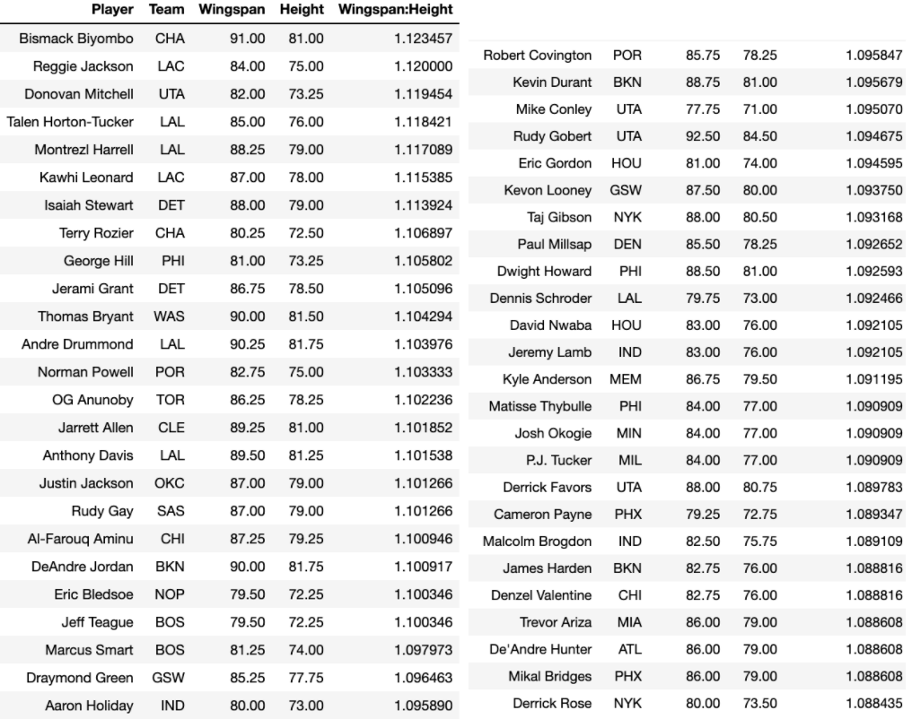

Hands Up
By Matthew Yep, Jack Troyan | June 6, 2021

In the growing era of positionless basketball where we see many NBA teams opting to run small ball lineups, there’s a lot more that comes into play in crafting an elite defense than just having a couple seven footers on the roster. The prevalence of the three pointer, and especially the threat of players like Steph Curry or Damian Lillard has spread out the floor, making it essential that defending teams are able to mark open gaps, cover passing lanes and close out on shooters. Wingspan has become the name of the game, with DPOY laureates like Antetokounmpo (7’ 4“ wingspan), Draymond (7’ 1”) and Kawhi (7’ 4”) continually showing their dominance on the defensive end of the court.
A couple of years ago, Bob Myers, the general manager of the Golden State Warriors, described that his “ideal player would be 6 foot 8 with a 7 foot 6 wingspan”. One such player that the Warriors front office has applied this philosophy to when building their roster is their center Kevon Looney. Since being taken with the 30th overall pick in the 2015 draft, Looney, who stands at 6 foot 8 with a 7 foot 3 wingspan, has emerged as an anchor to a Ron Adams Warriors’ defense that switches on everything. He does a great job of rotating to play help-defense, contesting jump shooters without fouling, and securing defensive boards to not give up second chance points.

Check out this clip of Looney’s wingspan making all the difference in a game against the Spurs back in January. Devin Vassel fills the lane for what should have been an easy two points, but Looney’s outstretched right arm prevents Rudy Gay from threading the needle. Even though he doesn’t snag the steal himself, the power of his wingspan lies in his ability to cut off Gay’s attacking angles and disrupt the passing lanes. He deflects the ball to his teammate, forces the turnover, and gives the Warriors a four-point-swing by creating offense from defense. Looney played a huge role in the Warriors finishing the past NBA season with the fifth best defense in the league. The Dubs had a defensive rating of 109.4, and were also third in the league in opponent turnovers at 15.7 per game.
Another defensive beast who made big plays this past season was Mikal Bridges. The Suns guard, who is 6 foot 7 and boasts a 7 foot 2 wingspan, is the kind of the guy that every team wants and every other team hates to play against. The kind of guy who steps up, guards the opponent's best player and prides himself on his ability to contain them one on one and get in their head and take them out of the game.

It’s crazy to see how even when Bridges is just standing there, his arms go down to nearly past his knees. When Lonzo has the ball and is two passes away, Bridges has his hands up and ready. Once the ball is just one pass away, he uses his strength to prevent Brandon Ingram from posting up. Then after nearly deflecting the wing pass to Ingram, Bridges recovers, anticipates the screen, and forces him to go left. He stays low in defensive stance and just as Ingram is about to drive to the basket, his extended reach picks the pocket and he goes coast to coast for the transition layup. The Suns finished the season with a defensive rating of 110.4 points per game, which was sixth best in the league, and much in part due to the havoc that Mikal Bridges caused for the players he locked down.
In this article, we’ll look to explore the relationship between NBA teams’ average wingspan and their defensive stats throughout the 2020-21 NBA season. We started our analysis by digging through draft combine records to find every active players’ wingspan and height, then created a dataset with all of these measurements. This took a really long time but once we collected the data, we figured it’d be useful to also analyze the players’ wingspan-to-height-ratio because length isn’t everything. Having five Mo Bamba’s out on the court isn’t going to do a team any good. We then decided to only include players that were on the floor for 15 or more minutes per game. Sure Tacko Fall is a big dude with a 8 foot 4 wingspan, but he only ever really played garbage time minutes, so we did not include him nor other end-of-the-bench players alike in our analysis.
Here we have the top 50 players with the highest wingspan-to-height-ratios in the league. The numbers seen here are measured in inches and as a frame of reference, the league average wingspan is about 82.4 inches and the league average wingspan:height ratio is about 1.05. Aside from a few guys like Reggie Jackson or Donovan Mitchell, most of the players on this list are rather notorious for their defensive prowess. We see multiple DPOY winners, guys that could’ve very well won DPOY, and many players who have been named to NBA All-Defensive squads over the past couple of years. It’s also interesting to note that not all of the guys we see here are towering centers like we might’ve expected. Wingspan doesn’t just make a difference in defending the paint. It also comes in handy for scrappy guards like Matisse Thybulle who had a remarkable sophomore year in terms of defense. He finished the regular season top six in the league in both steals and blocks, averaging 1.8 per game in both categories this past season.
The next step was then to group the individual player measurements by team, and merge this with a couple of defensive and hustle datasets. From this we got our final dataset to work with. This is captured in the image below, as we encapsulated the many relevant defensive statistics on a team by team basis.

We first examined the relationship between a team’s wingspan and its defensive rating. We did so in the graphic below by plotting a bar chart displaying teams’ wingspan in the decreasing order of their defensive rating.
The league average wingspan, represented by the horizontal red line, is about 82.4 inches. As seen in the graph, 11 of the top 15 defensive rated teams have an average wingspan above this league average. 11 of these top 15 teams also made the playoffs, of which 7 of them secured a top 4 seed in their respective conferences. We weren’t sure what to make of the outliers however. It can be seen on the right that the Pelicans, Thunder and Trail Blazers all have well-above-average team wingspans, yet they still struggle to protect their basket. When we removed these three teams from the picture, we got much stronger correlation coefficients between wingspan and various defensive statistics, but we’ll touch more on that later.
We further investigated this relationship by examining the median wingspan distribution for each team through the violin plot above, and found that only 7 of the top 15 teams had a median wingspan above the league average wingspan. However, when we consider that those medians of highly defensive-rated teams below the average (outside of Memphis) all have medians close to the average, we can deduce that teams’ average wingspans aren’t overly influenced by outliers and that average wingspan has a valid correlation with defensive performance. Another way we can interpret the violin plot is to see that many of the top 15 defensive teams (save for the Knicks, Suns and Grizzlies) have kernel densities concentrated above the league average line. For teams like the Sixers, Warriors, Clippers, Nuggets and more, the wider sections of the violins laying above the red line tells us that the majority of these teams’ players have remarkable reach.
We additionally wanted to see whether or not average wingspan had any significant effects on the many traditionally valued defensive statistics seen in our data set above, including: steals, blocks, deflections, points off turnovers etc. When finding the correlation coefficients for each of these statistics in relation to a team’s average wingspan, most showed a non-statistically significant relationship with wingspan and wingspan-to-height ratio. We suspect that this is likely due to our sample size being too small. Having analyzed the data on a team level, we only had 30 data points to work with. Perhaps we could’ve found more compelling results had we had compiled defensive data for past seasons as well, or explored it on an individual player level.
Nevertheless, we can still find wingspan having a significant role in three of these defensive metrics: defensive rebounding, opponent three-point percentage, and blocks. Note: The differing sizes of the team logos does not represent any kind of variable.
The fact that these three statistics have a noticeable correlation with wingspan provides additional insight into wingspan’s role in both the interior (BLK and DEFREB%) and perimeter (3PT%) areas of the floor, and that they play a large enough role in today’s NBA to affect a team’s overall defensive play. It is also somewhat funny to note that removing the Pelicans, Thunder and the Trail Blazers from the dataframe gave us a lot stronger correlations. These were the aforementioned outlier teams that have high average wingspans but terrible defensive ratings. Excluding them lead to much stronger correlations between team average wingspan and steals, points off turnovers, opponent field goal percentage, as well as opponent points in the paint.
Though the numbers might’ve not supported convincing evidence that wingspan has a strong relationship with defensive statistics on a team level other than blocks, opponent three point percentage or defensive rebound percentage, there is little doubt that a player’s extended wingspan can make all the difference in getting a defensive stop when it matters most. From youth league basketball to college ball to the NBA, there’s a reason that coaches constantly yell at their players to have their “HANDS UP!”. Sometimes all it takes is one defensive stop to turn the tide of the game and build momentum. Be it a steal, congesting the passing lanes, tipping the loose ball to your teammate or even just getting a hand in the shooter’s face, there are so many instances in the game of basketball where hustle and an extended reach can come clutch and completely shift the momentum of the game.
Sources: Basketball Reference, NBA.com, post 2017 wingspan data collected from NBA Combine Anthropometric Page, pre 2017 wingspan data from dribbleanalytics Big ups to Mark Cheung for the advice
.gif)